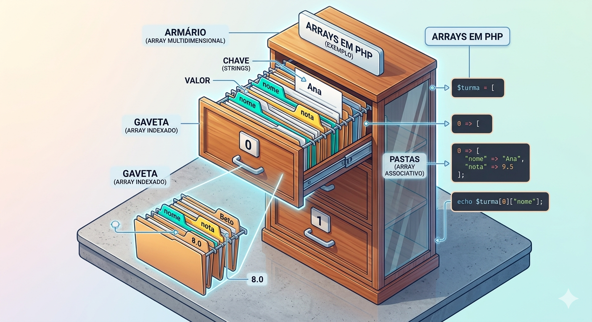
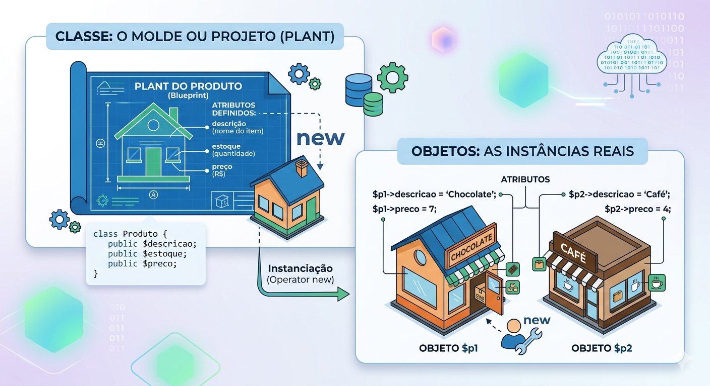
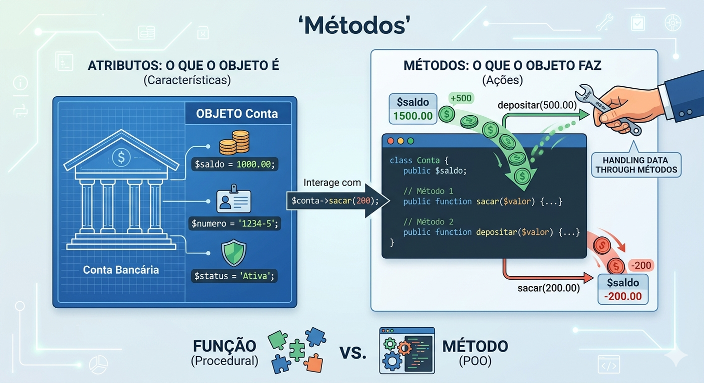

Descrição: Exploração técnica de estruturas de dados coletivas (arrays) e introdução aos pilares da POO: classes, atributos e métodos. Criação da classe modelo (entidade) para o projeto da Situação de Aprendizagem.
Pergunta: "Antes de começarmos, pensem: se vocês tivessem que gerenciar as informações de 10.000 produtos diferentes em um array manual, como garantiriam que nenhum desenvolvedor acidentalmente cadastrasse um 'preço' como sendo um texto em vez de um número?"
No PHP, os arrays são ferramentas extremamente versáteis. Eles não são apenas listas; são mapas ordenados que podem assumir diferentes formas dependendo da sua necessidade de organização.
Entender arrays no PHP é como aprender a organizar diferentes tipos de armários. Dependendo do que você quer guardar e de como quer encontrar depois, você escolhe uma estratégia diferente.
Antes de mergulharmos na prática, precisamos entender as três faces dos arrays:
É o tipo mais comum. Imagine uma fila ou uma lista de compras. A posição de cada item é definida por um número (índice), e no PHP, essa contagem sempre começa no 0.
Exemplo prático:
$frutas = ["Maçã", "Banana", "Morango"];
// O PHP entende: 0 => Maçã, 1 => Banana, 2 => Morango
echo $frutas[1]; // Saída: BananaAqui, em vez de números automáticos, você escolhe uma palavra-chave (string) para identificar o valor. É como uma agenda de contatos ou uma etiqueta de identificação.
Exemplo prático:
$carro = [
"marca" => "Toyota",
"modelo" => "Corolla",
"ano" => 2024
];
echo $carro["modelo"]; // Saída: CorollaImagine uma tabela do Excel. Você tem linhas e colunas. No PHP, um array multidimensional nada mais é do que um array que guarda outros arrays dentro dele.
Exemplo prático:
$usuarios = [
["nome" => "Ana", "email" => "ana@email.com"],
["nome" => "Beto", "email" => "beto@email.com"]
];
// Acessando o nome do segundo usuário (índice 1)
echo $usuarios[1]["nome"]; // Saída: Beto| Tipo | Chave (Key) | Uso Ideal |
|---|---|---|
| Indexado | Números (0, 1, 2...) | Listas simples, ordem cronológica. |
| Associativo | Strings ("nome", "preco") | Objetos, registros únicos, configurações. |
| Multidimensional | Números ou Strings | Tabelas, catálogos, sistemas de coordenadas. |

(Visualização gráfica dos tipos de arrays no PHP)
Para consolidar o que aprendemos, vamos montar um cenário real: um Sistema de Gestão de Frota. Neste exemplo, utilizaremos os três tipos de arrays para organizar as informações de maneira lógica.
<?php
// 1. ARRAY INDEXADO (Lista simples de categorias)
$categorias = ["Sedan", "SUV", "Hatch"];
// 2. ARRAY ASSOCIATIVO (Dados técnicos de um veículo específico)
$veiculo_destaque = [
"modelo" => "Corolla",
"marca" => "Toyota",
"ano" => 2024,
"cor" => "Prata"
];
// 3. ARRAY MULTIDIMENSIONAL (Tabela/Matriz de vários veículos)
$frota = [
[
"placa" => "ABC-1234",
"status" => "Disponível",
"km" => 15000
],
[
"placa" => "XYZ-5678",
"status" => "Em manutenção",
"km" => 42000
]
];
// --- EXIBINDO OS DADOS
echo "--- CATEGORIAS ---\n";
echo "A primeira categoria é: " . $categorias[0] . "\n\n";
echo "--- DESTAQUE ---\n";
echo "Veículo: " . $veiculo_destaque["modelo"] . " (" . $veiculo_destaque["marca"] . ")\n\n";
echo "--- RELATÓRIO DE FROTA ---\n";
echo "O veículo de placa " . $frota[1]["placa"] . " está " . $frota[1]["status"] . ".";
?>A Programação Orientada a Objetos (POO) é uma filosofia de construção de sistemas que busca aproximar o código do mundo real por meio de objetos que carregam dados e comportamentos. Aqui está uma explicação didática dos conceitos Classes e Atributos.
Uma Classe é a estrutura que define como um objeto será. Imagine que você quer fabricar vários carros de um mesmo modelo; a classe seria o projeto de engenharia ou a planta baixa desse carro.
Os Atributos representam as características ou o estado de um objeto. Se a classe for um "Produto", os atributos seriam as informações que o descrevem.
Nota didática: Embora atributos públicos permitam acesso direto, o uso de atributos privados ou protegidos é preferível para garantir o encapsulamento (segurança dos dados).

Abaixo, veja como transformamos a planta (Classe) em objetos reais com características próprias (Atributos):
<?php
// A CLASSE: O molde para todos os produtos
class Produto {
public $descricao; // Atributo
public $estoque; // Atributo
public $preco; // Atributo
}
// OS OBJETOS: Instâncias reais criadas a partir do molde
$p1 = new Produto;
$p1->descricao = 'Chocolate'; // Definindo o valor do atributo
$p1->preco = 7;
$p2 = new Produto;
$p2->descricao = 'Café'; // Cada objeto tem seus próprios atributos
$p2->preco = 4;
?>Neste exemplo, $p1 e $p2 são objetos distintos que compartilham a mesma estrutura (Classe), mas possuem dados diferentes (Atributos).
O que acontece com o $estoque? No código, o atributo $estoque foi definido na classe, mas nunca recebeu um valor nos objetos. Por padrão ele estaria vazio (null).
Nunca deixe atributos sensíveis como public. Se qualquer parte do sistema puder alterar o saldo de uma conta bancária sem passar por uma validação, você criou uma falha de segurança gravíssima.
Os métodos são um dos pilares fundamentais da Programação Orientada a Objetos (POO). Se os atributos são as "características" de um objeto, os métodos são as suas ações ou comportamentos.
Um método é, essencialmente, uma função escrita dentro de uma classe. Ele representa o que os objetos daquela classe podem fazer.
Para declarar um método, utilizamos a palavra-chave function dentro do corpo da classe. Assim como as funções comuns, eles podem receber parâmetros e retornar valores.
class Conta {
public $saldo;
// Um método para depositar valores
public function depositar($valor) {
if ($valor > 0) {
$this->saldo += $valor; // Modifica um atributo do próprio objeto
}
}
}O uso do $this: Dentro de um método, utilizamos a pseudo-variável $this para referenciar atributos ou outros métodos do próprio objeto que está executando a ação.

<?php
class ContaBancaria {
public $titular;
public $saldo;
// MÉTODO CONSTRUTOR: Executado automaticamente ao criar o objeto
public function __construct($nome, $valorInicial) {
$this->titular = $nome;
$this->saldo = $valorInicial;
echo "Conta de {$this->titular} criada com sucesso!\n";
}
// MÉTODO DE AÇÃO: Realiza um depósito
public function depositar($valor) {
if ($valor > 0) {
$this->saldo += $valor;
echo "Depósito de R$ {$valor} realizado.\n";
}
}
// MÉTODO DE AÇÃO: Realiza um saque com validação
public function sacar($valor) {
if ($valor > 0 && $valor <= $this->saldo) {
$this->saldo -= $valor;
echo "Saque de R$ {$valor} autorizado.\n";
} else {
echo "Saque de R$ {$valor} negado: Saldo insuficiente.\n";
}
}
// MÉTODO DE RETORNO: Exibe o saldo atual
public function obterSaldo() {
return "Saldo atual de {$this->titular}: R$ {$this->saldo}\n";
}
}
// --- UTILIZANDO OS MÉTODOS
$minhaConta = new ContaBancaria("Maria", 500);
$minhaConta->depositar(200);
$minhaConta->sacar(100);
$minhaConta->sacar(1000);
echo $minhaConta->obterSaldo();
?>Se você tem 50 telas no seu sistema que exibem o preço formatado e hoje o cliente decide mudar de "R$" para "US$", onde seria mais fácil alterar: em 50 arquivos HTML ou em um único método exibirPrecoFormatado() dentro da classe?
Pergunta: Posso criar uma classe sem o método __construct?
Resposta: Sim! O PHP criará um construtor vazio padrão. Porém, se o seu objeto precisa de dados básicos para "existir" (como o CPF de um cliente), é boa prática obrigar esses dados no construtor.
Pergunta: Qual a diferença real entre Array Associativo e Classe?
Resposta: O array é apenas um "saco de dados". Ele não tem comportamento. A Classe une os dados aos comportamentos (métodos). Use arrays para listas simples e Classes para representar entidades do seu negócio.
Pergunta: O que é o erro "Cannot access private property"?
Resposta: Isso acontece quando você tenta fazer algo como $produto->preco = 10; fora da classe. Como o atributo é private, você deve usar o método setter: $produto->setPreco(10);.
Pergunta: Posso usar IA para gerar Getters e Setters?
Resposta: Sim, IDEs e IAs são ótimas para isso (é um código repetitivo). No entanto, a lógica de validação (ex: não aceitar estoque negativo) é responsabilidade sua e deve ser revisada.
Pergunta: Por que usar tipagem (string, int) nos parâmetros?
Resposta: Para evitar erros bobos. Se você espera um número para o cálculo de imposto e recebe uma string "dez", o PHP 8 com strict_types avisará o erro na hora, em vez de fazer um cálculo errado silencioso.
O que fizemos hoje é a base do seu CRUD. As classes que vocês criaram serão as "Entidades" que o banco de dados irá preencher. Sem essas classes, vocês teriam que tratar cada dado do banco manualmente em todas as páginas, o que tornaria o projeto final impossível de entregar no prazo.